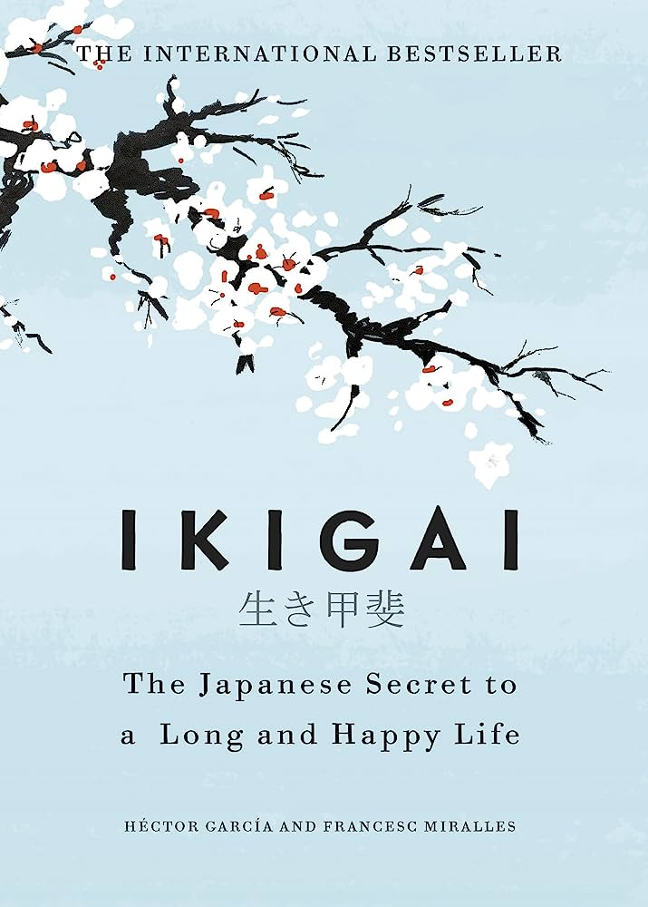

TABLE OF CONTENTS

- PROLOGUE: The Island of Longevity
- Part 1: WHAT IS IKIGAI?
- 1.1 Ikigai: The Art of Staying Young While Growing Old
- 1.2 The Ten Rules of Ikigai
- Part 2: APPLYING IKIGAI
- 2.1 Finding Flow in Everything You Do
- 2.2 How to Make the Most of Your Time
- 2.3 Moving Toward Happiness
- Part 3: THE IKIGAI DIET
- 3.1 Foods That Bring Longevity
- 3.2 The Benefits of Green Tea
- 3.3 Eating Mindfully
- Part 4: THE IKIGAI WORKOUT
- 4.1 Gentle Movements, Great Health
- 4.2 Exercises for a Long Life
- EPILOGUE: Your Ikigai
- ACKNOWLEDGEMENTS
- A NOTE ON THE AUTHORS: The authors of "Ikigai: The Japanese Secret to a Long and Happy Life" are Héctor García and Francesc Miralles. They explore the concept of ikigai, a Japanese philosophy about finding purpose and joy in life, in their book. García is a Spanish author and Miralles is a Spanish novelist and author of self-help books.